Now that it's finally Memorial Day, I'm just happy to no longer be staring at this promotional email I got from Yankee Candle. It looks normal enough. Some nicely designed images with a couple simple calls to action for 50% off select candles. Here's a quick snapshot:
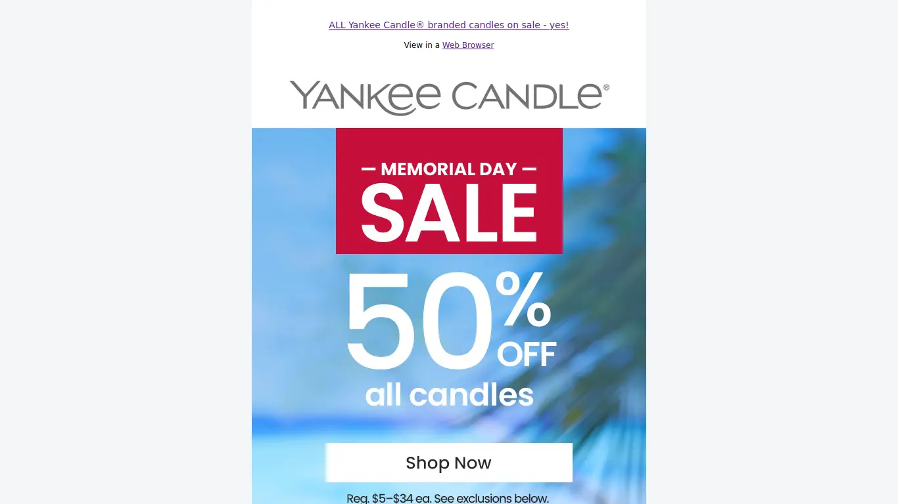
Header, Logo, and First Call to Action
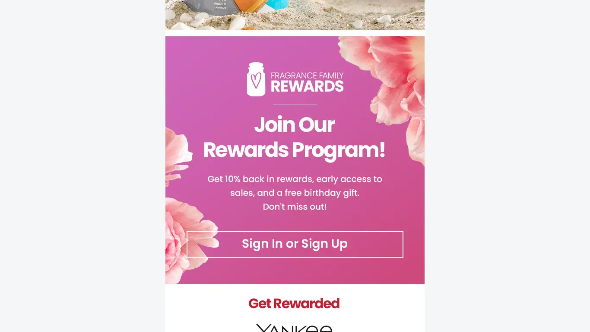Second Call to Action
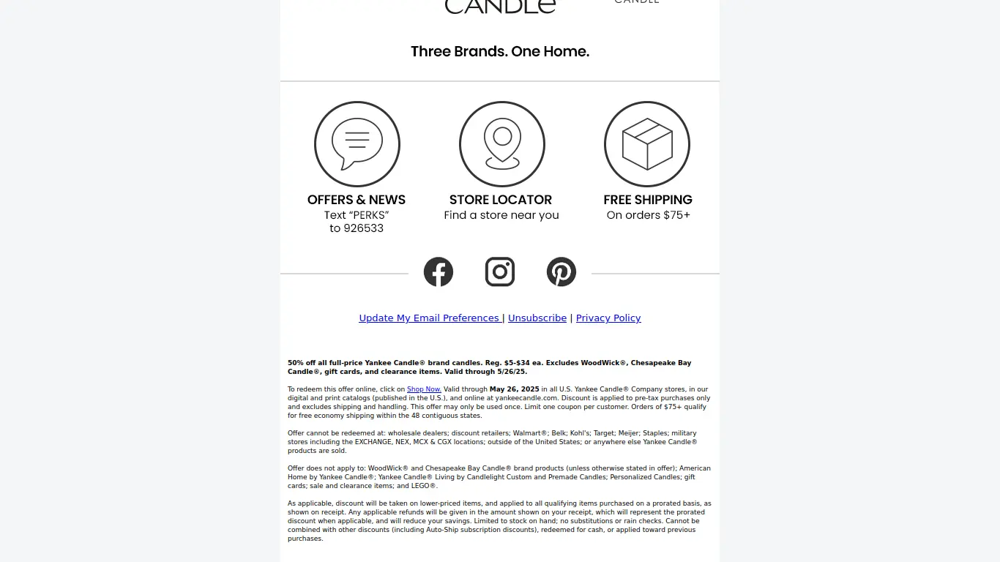Icons, Socials, Unsubscribe and Legalese
At first glance, everything seems fine. It's a pretty enough email and there don't seem to be any issues of clarity. But if we take a closer look under the hood, we might see that things aren't exactly as they appear:
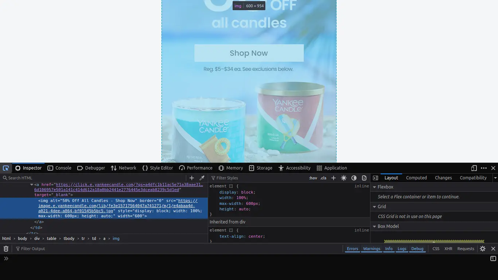
Over-reliance on images with no live text
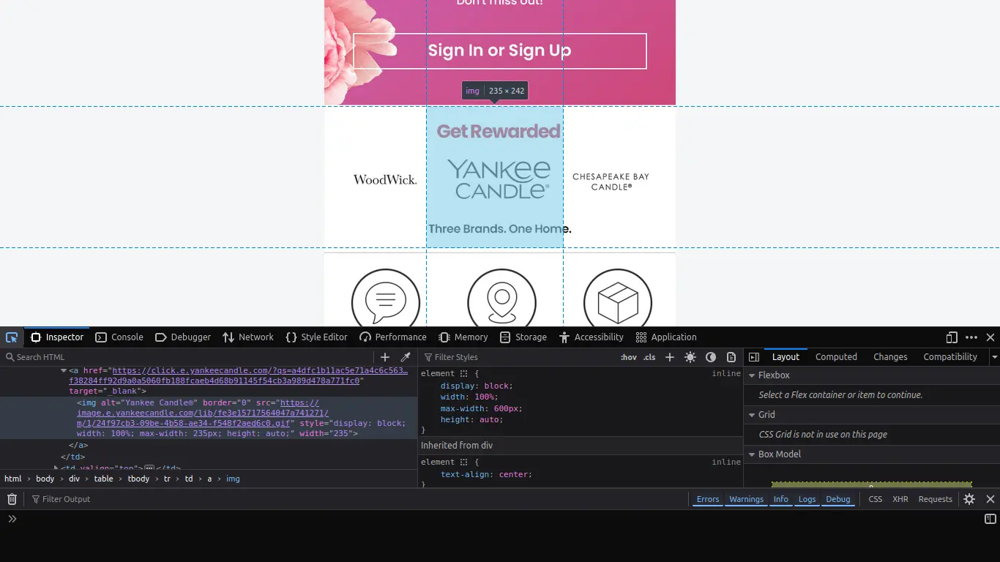Images split haphazardly with unhelpful alternate captions
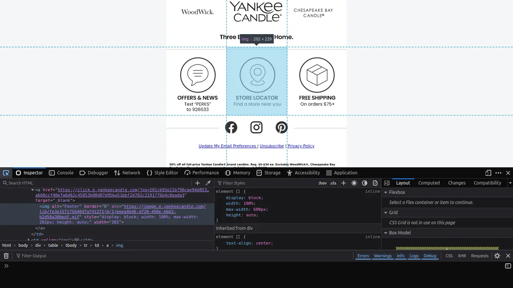Some important and 'nice-to-know' information hidden behind useless alternate captions.
Things fall apart pretty quickly. First big problem is the lack of any live text, meaning all text is baked into the images themselves, leaving all information to be communicated through alternative captions, or alts—descriptors that web developers give to images for screen-readers to interpret or in case the image doesn't happen to load.
Lack of useful alts or live text means a screen reader or a text-only browser is not going to be able to interpret this information as seamlessly as it could. Instead of separating the promotional information from the call to action, you presume everyone will assume that the information is the call to action and the call to action is clearly defined with expected results after clicking. The alt for that first image is "50% Off All Candles - Shop Now". That's simple enough, but it's far from best practice.
Take a closer look at that second screenshot if you can. It actually gives you a clue as to how this email was designed. A graphic designer took a few images, and their email marketing clipped up the images and turned them into clickable links. See at the bottom of the highlighted region where it says "Three Brands. One Home"? Notice that there's text on the top that adds context to the links, and text on the bottom that's cut off. It's actually a part of the adjacent image. Looks nice, functions poorly.
Just take a look at what Lynx, a text-only web browser, displays when you take a look at this email:
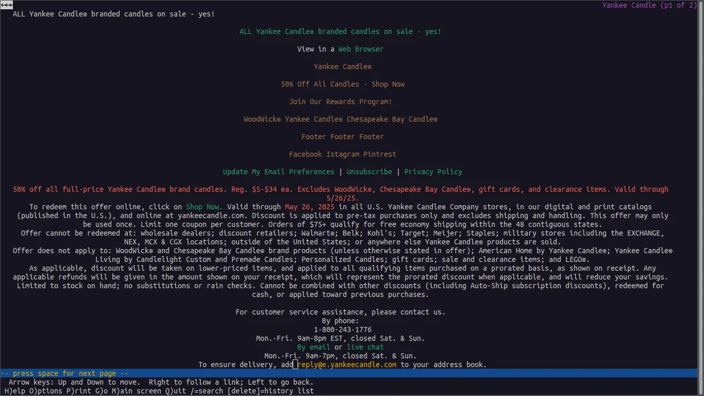
Notice the unclear calls to action, muddy alts, and wall of text legalese
You can see right away how unhelpful and strangely structured this thing becomes when you strip away the fluff. If you were reading this, wouldn't you want to know what "Footer Footer Footer" meant before venturing to click on it? It's an oversight that signals a lack of care and causes confusion with potential to frustrate and waste time. I was surprised this thing came out of such a widely recognized brand.
On top of it all, there's no help when it comes to the exclusions. Small text is the norm, and there might be some useful information hidden in here, but walls of text discourage paying much attention at all. Would you rather be able to skim and take what you need or buckle down and read the whole thing before making it to the end and realizing there wasn't anything valuable in there after all?
To sum up, we've got an email that smells like the beach on the outside, but kind of stinks when you start peeling back the layers. Three things that could use some improvement are the over-reliance on images with no live text, unhelpful or downright useless alternate captions to do all the heavy-lifting, and the unskimmable wall of text at the bottom. I would wager that this email was made by a graphic designer before splicing up the images and pasting it into a drag-and-drop editor.
So how do you turn something like this around? There is a balance to be found between captivating images and functional template design. My goal here was to make an email that was easier to parse for a screen-reader or for text-only browsers while still capturing the magic that the designer was shooting for. I also wanted to clarify some nice-to-know's and calls to action that were a little muddy or obscured by unhelpful alts.
The first thing I did was split everything into tables. If you're familiar with modern web design, you might cringe thinking about table-based layouts. This is a development practice which, in web development, belongs to days gone by. In email development, however, different email clients (like Gmail, Outlook, Thunderbird, Apple Mail, etc.) will parse through styles very differently. Table-based layouts are more time-consuming and tedious, but it's best-practice and ensures consistent layout design across email clients.
Once everything was planned out, I started laying out the design. The biggest challenge in the beginning was deciding how best to overlay text over images here. Web developers might suggest adding a simple "position: absolute;" or tricks with negative margins, but like I said, these are tricks that don't fly reliably across different email clients. So I had to come up with a trick of my own.
Instead of giving this table's cell a background image (something that many email clients will ignore), I gave it a background color which matched the skyline at the top of the image placed directly below. After playing around with it on canva and eyeballing font-sizes and colors, I came up with this:
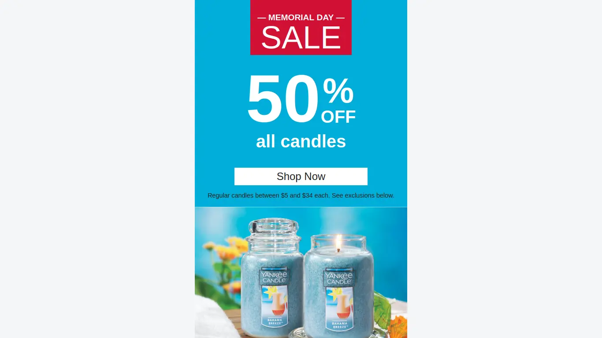
I tried to capture the same feeling using publicly available images
Not bad, huh? Obviously, if I were working with a designer as part of a team on this, I'd be able to coordinate a color shift to the one I chose as the background color for the table here. But for what I had to work with, I was pretty happy with this. All the text is live, the call to action link is separate from the image, and I even went a step further and clarified the tidbit which introduces potential exclusions.
I went ahead and did something similar with the next ad:
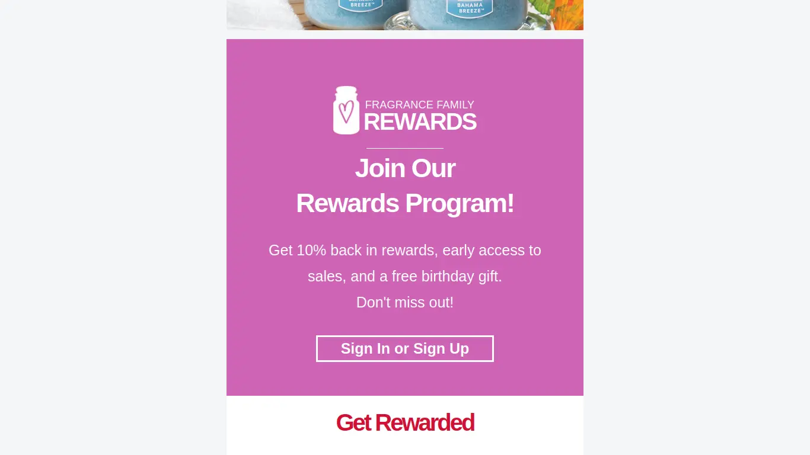
Again, I tried to go for the feel of the original
A little less color shifting than the original, but again, working with a graphic designer as part of a team would have made this even better. That said, I was really pleased with how this turned out as well. After this, I had a bit of an easier time. It was just a question of capturing the feel of the original while separating text from images as much as I could.
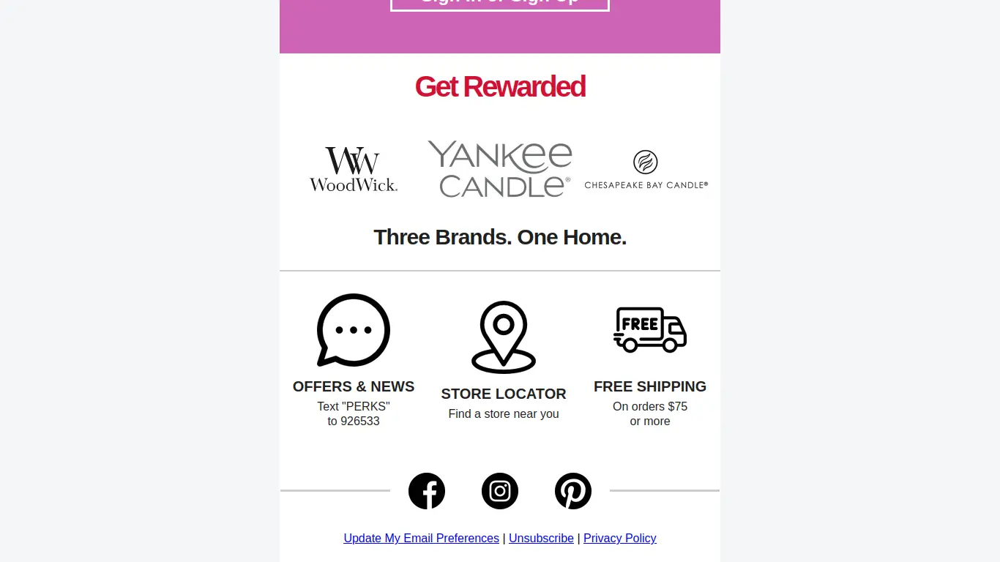
All text apart from the logo images is live and a screen-reader could easily parse it.
Notice those three icons in the middle, the message, location, and shipping icons. In the original, these images and the information they convey was hidden behind the alt "Footer" for each. Here, they were given much more clear and informative roles through their alts before a screen-reader would move on to the text below for each: "Learn more about Text Messaging perks and FAQs (opens in a new tab)" is a whole lot better than "Footer" in my opinion.
The last improvement I made was to fix the skimmability issue. It was a simple fix. I increased the size of the text a bit, broke the wall of text into discrete sections, and added headers to them. I also put some existing text in bold to make things clearer at first glance when you're looking for something quickly.
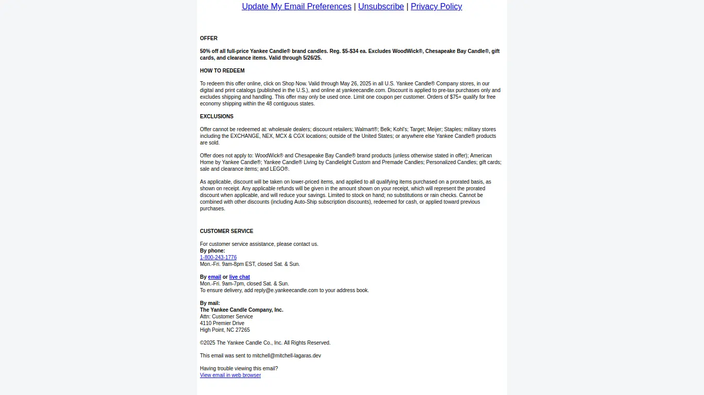
A passing glance is now all you need to find what you're looking for
Just a little addition like this makes the whole thing a bit easier on the eyes. If you have a wall of necessary information, you can still include it while making it user-friendly and skimmable.
Here's how the remake holds up when you view it in Lynx:
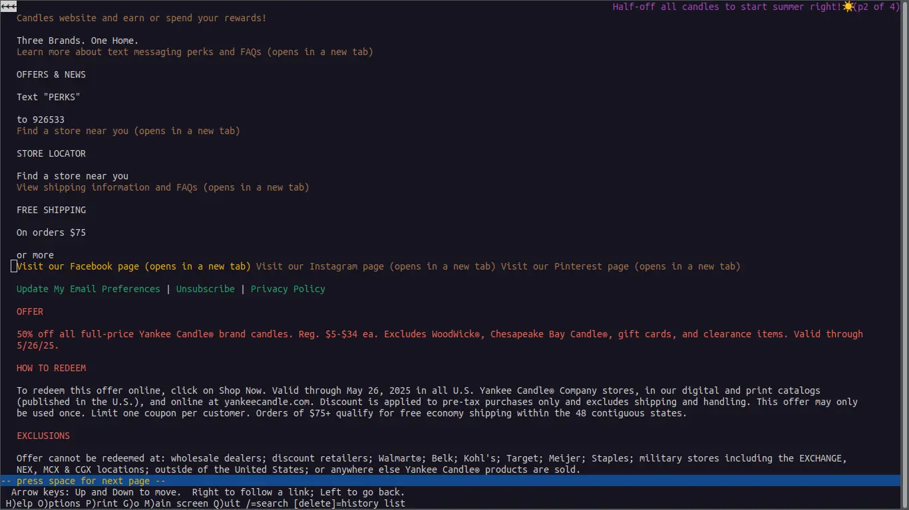
Clear alternate captions, clear structure, clear calls to action (Read more about Lynx here!)
Being careless with your emails is a pretty risky thing to do considering how valuable your email list is. The oft-cited statistic for the ROI (return of investment) for email marketing is 4000% (which comes out to $40 earned for every $1 spent). That is huge potential, and brands could be missing out on a lot more than they think when they overlook their audiences that might not be able to interact with their message, whether they're visually or cognitively impaired, ESL (English as a Second Language) speakers, or browsing with simpler browsers or in low-bandwidth areas.
Keep an eye out for emails that rely too heavily on images! They're more prevalent than you think. As an aside, I should probably mention that I'm in no way affiliated with Yankee Candle or any peripheral brand. This is by no means meant as a slight or attack on their brand, either—this was done to show that there's room for improvement anywhere you look—I'm sure my "after" email could be done even better than I made it out to be—and I'd like to show you how it can be done.